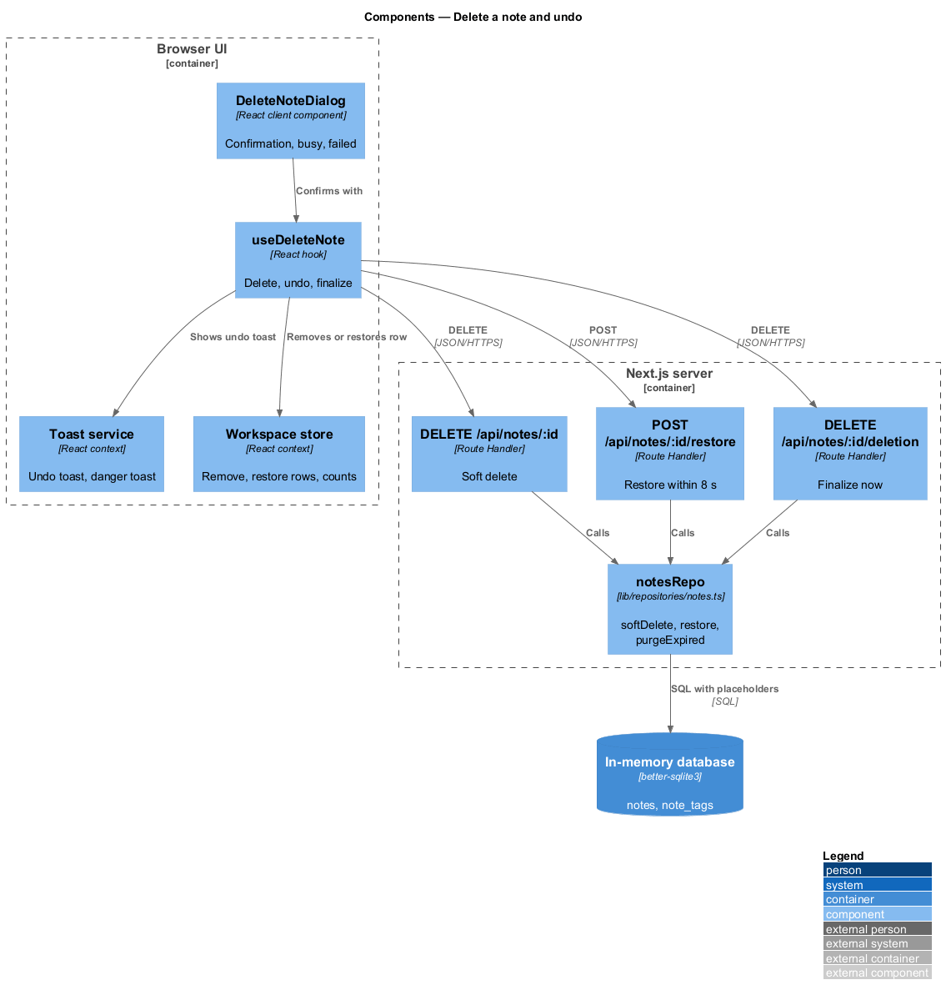

Sequence: delete a note

Step eleven: twenty-eight designs, one hundred and sixty diagrams, every requirement mapped.
designs, each a README.md and a diagrams/ folder
diagrams, PlantUML sources and rendered PNGs
renders them
Model: Sonnet. Commit 2234a91.
Every L2 requirement in docs/specs/L2.md is realized by one or more designs below.
| Design | L2 requirements |
|---|---|
| Sign in | L2-003, L2-004, L2-005 |
| Delete a note and undo | L2-016, L2-017 |
| App shell, responsive layout and navigation drawer | L2-044, L2-045 |
sign-up · sign-in · sessions-and-sign-out · session-expiry · credentials-and-secrets
create-and-open-note · edit-and-autosave · offline-device-copy · delete-and-undo
tag-a-note · browse-notes · search-notes · filter-by-tag
account-menu · account-settings · change-password · delete-account
app-shell · dialogs · notifications · status-pages · input-and-output-safety · access-control · request-protection · in-memory-data · theming · accessibility · performance
The cross-cutting pieces every feature renders into. Built first.
DeleteNoteDialog: an alertdialog on the shared Dialog, focus on CanceluseDeleteNote: calls delete, updates the store and counts, shows the undo toastDELETE /api/notes/:id · POST …/restore (≤ 8,000 ms) · DELETE …/deletionsoftDelete sets deleted_at · restore · purgeExpired before every write
The server window is exactly 8,000 ms; whether to add a transport grace period is <TO SUPPLY>.
Honest gaps, resolved and recorded during implementation.
Delete a note.
A dialog with three states, a hook, three route handlers, two repository functions, a purge, a toast.
The parts list is what the next step prices.
Ninety-nine developer-days, and a decision about scope.